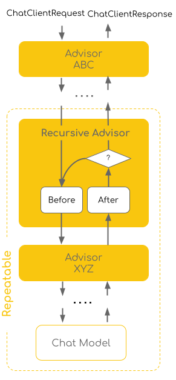

Recursive Advisors
What is a Recursive Advisor?

-
Executing tool calls in a loop until no more tools need to be called
-
Validating structured output and retrying if validation fails
-
Implementing Evaluation logic with modifications to the request
-
Implementing retry logic with modifications to the request
The CallAdvisorChain.copy(CallAdvisor after) method is the key utility that enables recursive advisor patterns.
It creates a new advisor chain that contains only the advisors that come after the specified advisor in the original chain
and allows the recursive advisor to call this sub-chain as needed.
This approach ensures that:
-
The recursive advisor can loop through the remaining advisors in the chain
-
Other advisors in the chain can observe and intercept each iteration
-
The advisor chain maintains proper ordering and observability
-
The recursive advisor doesn’t re-execute advisors that came before it
Built-in Recursive Advisors
Spring AI provides two built-in recursive advisors that demonstrate this pattern:
ToolCallingAdvisor
The ToolCallingAdvisor implements the tool calling loop as part of the advisor chain, rather than relying on the model’s internal tool execution. This enables other advisors in the chain to intercept and observe the tool calling process.
Key features:
-
Loops through the advisor chain until the
ToolExecutionEligibilityCheckerreports no more tool calls -
Supports "return direct" functionality - when a tool execution has
returnDirect=true, it interrupts the tool calling loop and returns the tool execution result directly to the client application instead of sending it back to the LLM -
Uses
callAdvisorChain.copy(this)to create a sub-chain for recursive calls -
Supports configurable conversation history management via
conversationHistoryEnabled -
Supports a pluggable
ToolExecutionEligibilityCheckerto customize when the loop iterates
Example usage:
var toolCallingAdvisor = ToolCallingAdvisor.builder()
.toolCallingManager(toolCallingManager)
.advisorOrder(BaseAdvisor.HIGHEST_PRECEDENCE + 300)
.build();
var chatClient = ChatClient.builder(chatModel)
.defaultAdvisors(toolCallingAdvisor)
.build();Conversation History Management
The ToolCallingAdvisor includes a conversationHistoryEnabled configuration option that controls how conversation history is managed during tool calling iterations.
By default (conversationHistoryEnabled=true), the advisor maintains the full conversation history internally during tool call iterations. This means each subsequent LLM call in the tool calling loop includes all previous messages (user message, assistant responses, tool responses).
By default, memory advisors (DEFAULT_CHAT_MEMORY_PRECEDENCE_ORDER = HIGHEST_PRECEDENCE + 200) are placed outside the tool-call loop. The ToolCallingAdvisor (at HIGHEST_PRECEDENCE + 300) manages conversation history internally across iterations. The memory advisor loads history once before the loop and persists only the final user/assistant exchange after it ends. This is the recommended setup because most ChatMemoryRepository implementations do not support tool-call message types.
// Default setup: memory advisor is outside the tool-call loop (no explicit order needed)
var chatMemoryAdvisor = MessageChatMemoryAdvisor.builder(chatMemory).build();
// DEFAULT_CHAT_MEMORY_PRECEDENCE_ORDER = HIGHEST_PRECEDENCE + 200 < ToolCallingAdvisor.DEFAULT_ORDER (+300)
// ToolCallingAdvisor manages its own conversation history across tool-call iterations
var chatClient = ChatClient.builder(chatModel)
.defaultAdvisors(chatMemoryAdvisor)
.build();Use the .disableInternalConversationHistory() method only when placing a memory advisor inside the tool-call loop (order above ToolCallingAdvisor.DEFAULT_ORDER). The memory advisor then handles history on every iteration. Note that only InMemoryChatMemoryRepository supports persisting tool-call messages; other repositories should use the default outside-loop setup above.
| The spring-ai-session community project provides a session-aware memory implementation that fully supports tool-call messages and can be safely used inside the tool-call loop with any backend. See the spring-ai-session documentation. |
var toolCallingAdvisor = ToolCallingAdvisor.builder()
.toolCallingManager(toolCallingManager)
.disableInternalConversationHistory() // Memory advisor inside the loop handles history
.advisorOrder(BaseAdvisor.HIGHEST_PRECEDENCE + 300)
.build();
var chatMemoryAdvisor = MessageChatMemoryAdvisor.builder(chatMemory)
.advisorOrder(BaseAdvisor.HIGHEST_PRECEDENCE + 400) // Inside (after) ToolCallingAdvisor
.build();
var chatClient = ChatClient.builder(chatModel)
.defaultAdvisors(chatMemoryAdvisor, toolCallingAdvisor)
.build();User-Controlled Tool Execution
By default, ToolCallingAdvisor is auto-registered and manages the entire tool-calling loop internally — the caller only receives the final LLM answer.
When you need full control over the loop (for example, to stream intermediate progress to a UI, add custom observability, or apply conditional logic between iterations), you can opt out of the auto-registered advisor and drive the loop yourself.
Disable the auto-registration on a per-call basis using AdvisorParams.toolCallingAdvisorAutoRegister(false):
ToolCallingManager toolCallingManager = ToolCallingManager.builder().build();
ToolCallback[] tools = ToolCallbacks.from(new WeatherTools());
ChatOptions chatOptions = ToolCallingChatOptions.builder()
.toolCallbacks(tools)
.build();
String question = "What is the weather in Amsterdam and Paris?";
// ToolCallingAdvisor is disabled — no tool loop runs automatically
ChatClientResponse response = chatClient.prompt()
.user(question)
.options(chatOptions)
.advisors(AdvisorParams.toolCallingAdvisorAutoRegister(false))
.call()
.chatClientResponse();
Prompt prompt = new Prompt(List.of(new UserMessage(question)), chatOptions);
// Drive the loop manually — each iteration can be forwarded to a UI as it happens
while (response.chatResponse() != null && response.chatResponse().hasToolCalls()) {
ToolExecutionResult result = toolCallingManager.executeToolCalls(prompt, response.chatResponse());
prompt = new Prompt(result.conversationHistory(), chatOptions);
response = chatClient.prompt()
.messages(result.conversationHistory())
.options(chatOptions)
.advisors(AdvisorParams.toolCallingAdvisorAutoRegister(false))
.call()
.chatClientResponse();
}For a complete example including the streaming path, see User-Controlled Tool Execution — With ChatClient.
Observing the Tool-Calling Loop
As an alternative to driving the loop manually, you can place a custom advisor inside the ToolCallingAdvisor loop by giving it an order value greater than ToolCallingAdvisor.DEFAULT_ORDER (e.g. HIGHEST_PRECEDENCE + 400).
Such an advisor is invoked on every iteration of the tool-calling loop, not just once at the end, which means it has access to all intermediate messages:
-
In streaming mode — it receives the model’s raw chunk stream for each iteration, including tool-call request chunks, before
ToolCallingAdvisorfilters them out of the outbound stream. -
In the call path — the conversation history passed in each subsequent request includes the
ToolResponseMessage(s) from the previous iteration, so the advisor observes both tool-call requests and their responses.
This pattern lets you forward intermediate chunks to a side channel (SSE, WebSocket, log) without disrupting the tool-calling loop:
public class ToolCallObservingAdvisor implements CallAdvisor, StreamAdvisor {
private final Consumer<ChatClientResponse> observer;
public ToolCallObservingAdvisor(Consumer<ChatClientResponse> observer) {
this.observer = observer;
}
@Override
public ChatClientResponse aroundCall(ChatClientRequest request, CallAdvisorChain chain) {
// Inspect all messages on every iteration — subsequent requests include ToolResponseMessages
request.prompt().getInstructions().forEach(msg -> log.debug("Message: {}", msg));
ChatClientResponse response = chain.nextCall(request);
observer.accept(response);
return response;
}
@Override
public Flux<ChatClientResponse> aroundStream(ChatClientRequest request, StreamAdvisorChain chain) {
// Observe every chunk including tool-call request chunks that ToolCallingAdvisor will suppress upstream
return chain.nextStream(request).doOnNext(observer);
}
@Override
public int getOrder() {
return Ordered.HIGHEST_PRECEDENCE + 400; // inside ToolCallingAdvisor (order 300)
}
}Register the observing advisor alongside the auto-registered ToolCallingAdvisor:
var chatClient = ChatClient.builder(chatModel)
.defaultAdvisors(new ToolCallObservingAdvisor(chunk -> forwardToSse(chunk)))
.build();
String response = chatClient.prompt()
.user("What is the weather in Amsterdam and Paris?")
.tools(new WeatherTools())
.call()
.content();Because ToolCallObservingAdvisor is at order HIGHEST_PRECEDENCE + 400 it is inserted after the auto-registered ToolCallingAdvisor (order HIGHEST_PRECEDENCE + 300) in the chain, so it participates in every tool-call iteration.
ToolCallingAdvisor still filters tool-call chunks from what it returns to the outer chain, so the main caller receives only the final answer — the observing advisor handles the side-channel emission.
This approach keeps the tool-calling loop fully managed by the framework while still giving you complete visibility into every intermediate step, and it pairs naturally with the conversationHistoryEnabled and memory advisor patterns described in Conversation History Management.
Return Direct Functionality
The "return direct" feature allows tools to bypass the LLM and return their results directly to the client application. This is useful when:
-
The tool’s output is the final answer and doesn’t need LLM processing
-
You want to reduce latency by avoiding an additional LLM call
-
The tool result should be returned as-is without interpretation
When a tool execution has returnDirect=true, the ToolCallingAdvisor will:
-
Execute the tool call as normal
-
Detect the
returnDirectflag in theToolExecutionResult -
Break out of the tool calling loop
-
Return the tool execution result directly to the client application as a
ChatResponsewith the tool’s output as the generation content
StructuredOutputValidationAdvisor
The StructuredOutputValidationAdvisor validates the structured JSON output against a JSON schema and retries the call if validation fails, up to a specified number of attempts.
Key features:
-
Derives a JSON schema from the expected output type, or accepts a pre-supplied schema string
-
Validates the LLM response against the schema
-
Retries the call if validation fails, up to a configurable number of attempts (default: 3)
-
Augments the prompt with validation error messages on retry attempts to help the LLM correct its output
-
Uses
callAdvisorChain.copy(this)to create a sub-chain for recursive calls -
Optionally supports a custom
JsonMapperfor JSON processing
The advisor can be configured via outputType (schema derived automatically) or outputJsonSchema (pre-supplied schema string); the two options are mutually exclusive.
Example usage with outputType:
var validationAdvisor = StructuredOutputValidationAdvisor.builder()
.outputType(MyResponseType.class)
.maxRepeatAttempts(3)
.build();
var chatClient = ChatClient.builder(chatModel)
.defaultAdvisors(validationAdvisor)
.build();Example usage with a pre-supplied JSON schema:
var validationAdvisor = StructuredOutputValidationAdvisor.builder()
.outputJsonSchema(myConverter.getJsonSchema())
.build();Alternatively, you can enable schema validation directly on an entity() call without configuring the advisor manually, using EntityParamSpec:
ActorFilms actorFilms = chatClient.prompt()
.user("Generate the filmography for a random actor.")
.call()
.entity(ActorFilms.class, spec -> spec.schemaValidation());